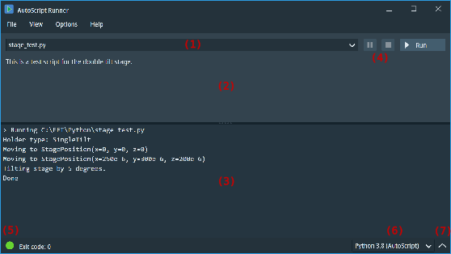

AutoScript Runner is a convenient tool designed as a launcher for Python scripts, which can utilize AutoScript API functions or work independently. It serves as a preferred option for executing scripts that are already finely tuned and do not require further editing.

A typical use case is to open a folder with multiple scripts using the File/Open Folder menu. The Runner scans the folder for Python source files and identifies the startup scripts as those that contain AutoScript initialization code or the function main(). These scripts are listed in the script selector (1). If the script is documented with an introductory comment, this comment is displayed in the upper pane (2) for the selected script.
When you click the Run button, the script is executed by a Python interpreter from the selected virtual environment (6). You can choose an environment created using the AutoScript Package Manager or select your own.
All output is directed to the Output panel (3), which can be expanded or collapsed by clicking the arrow icon (7). The status of the script execution is displayed in the status bar (5) at the bottom of the window.
It is also possible to pause or stop a running script (4), provided that the script has implemented regular checks of the control signals (see functions check_pause_requested() and check_pause_requested()). This mechanism allows you to define convenient break points where consistency of collected data and microscope state is ensured. If you have inadvertently requested a pause or stop, you can undo the action by clicking the Request button (4) again before the script reaches the check method.
If the pause or stop is requested but the check functions are not called by the script, its execution will not be affected.
- the buttons are disabled, request can not be sent. Either the script is not running or another action has already been requested.
- the buttons are clickable and clicking them will request the corresponding action.
- the corresponding action has been requested. It is possible to cancel the request at this moment by clicking the buttons.
- the script execution has been paused. The script execution resumes by clicking the button.
In the current version of the Runner, it is not possible to read user input from the console.